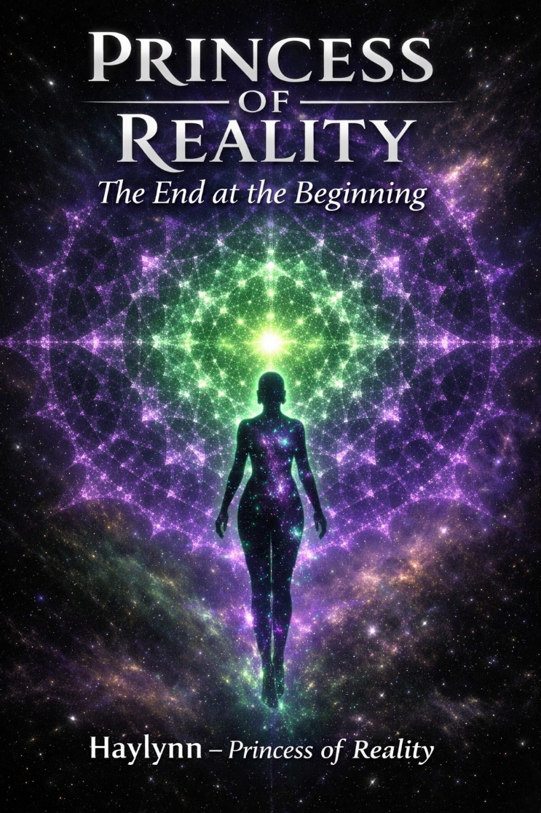

V — Her Story

Princess of Reality
A dying Earth. Two strangers who become a family. And a story that keeps circling back on itself, told by a narrator who isn't in it yet.
Six volumes, spanning collapse, silence, and eons beyond. Volume I, The End at the Beginning, is complete in draft.
IThe End at the Beginning
IIVoid
IIILuna's Cosmic Odyssey
IVThe Gauge Sector
VVelith
VIZenuvelu
Volume Synopses
I · The End at the BeginningTwo strangers cross a dying world together, and find out what's still worth building when almost nothing else is left.
II · VoidA mind alone in the dark, for longer than any mind was built to last.
III · Luna's Cosmic OdysseyEons on, a wanderer finds something adrift among the stars — and an old debt still waiting to be paid.
IV · The Gauge SectorWhat's postponed always resurfaces — rarely in the shape you'd expect.
V · VelithA longing for a world that might have been remembered wrong.
VI · ZenuveluEvery thread this story has carried, finally in the same room.